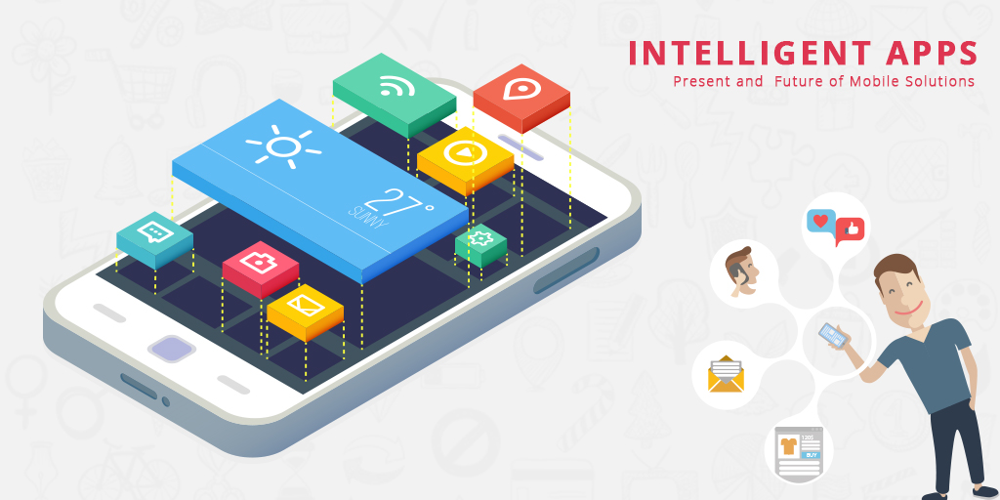
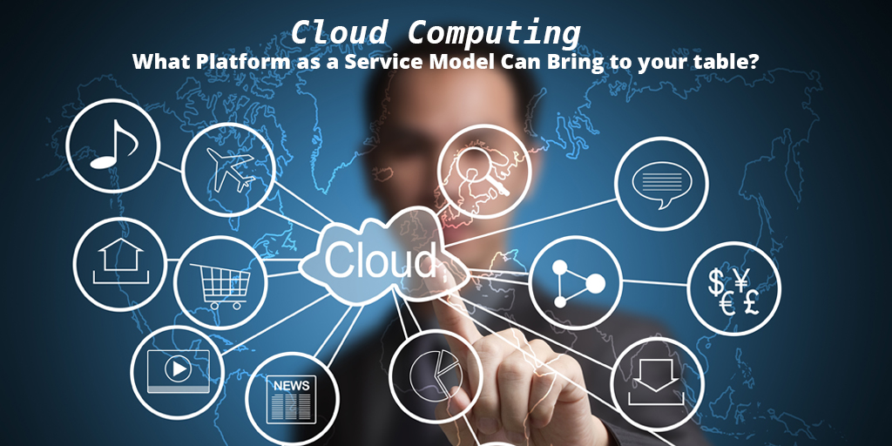
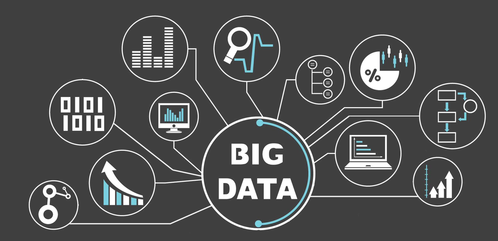

Top 10 hottest and trendiest technologies in 2020
We have gone through half of the year and have seen how tremendous technologies have risen up to contribute greatly in various facets of our lives. As we would gladly rank top movies,songs,artists,actors and actresses, I believe technology should not be left out at all. Technology is making great impact and it is good to rank them in grand style. Let us get right to unraveling what these top 10 hottest and trendiest technologies are😎.
10.Robotic Process Automation
Robotic Process Automation is no new technology. It existed as early as 1990 and has been evolving and booming ever since. Robotic Process Automation is the technology that allows for configuration of computer software, or a “robot” to emulate and integrate the actions of a human interacting within digital systems in order to execute a business process. These robots use user interfaces to capture and manipulate applications just like we humans do. Not only does this software work faster but also accurately, as it makes almost zero mistakes. Companies like Bluprism,UiPath,AutomationAnywhere and Softomotive have been incorporating RPAs into their businesses as it improves efficiency and enhances productivity. You can read more on RPAs here.
9.Virtual reality and Augmented reality.

The number 9 slot goes to Virtual reality and Augmented reality. These technologies are shaping new environments that are integrating both physical and virtual objects at different levels. The areas VR and AR are impacting are limitless. Talk of the popularly acclaimed Snapchat app,iPhone Facetime, Memoji and filters on Instagram .All these use VR and AR to make facial recognition software more sophisticated like never before. These technologies are attracting more investors and the general public through interactive gaming and the area of sports broadcasting, where 3D graphics and interactive visual elements are incorporated in the live footage games. These technologies are indeed enhancing the virtual experience.
8.Intelligence Apps
We cannot rank top technologies without including Intelligent apps. These are applications that make use of real-time data from user interactions and other sources to make predictions and meaningful suggestions to deliver personalized experience. Examples of such apps are chat-bots,virtual assistants among others. These apps are data-driven ,that is combining multiple data sources to bring out insights. They are also action-oriented and continuously adapting by using predictive analysis to give personalized suggestions. Intelligent apps are definitely the next generation of applications.
7.Internet of Things(IoT)
IoT is really changing the world from smart cars to wearable technology and to smart homes. IoT is evolving than we can ever imagine. It started to take off in popularity in 2010 and has since been booming. It has contributed greatly in ensuring security in buildings by application of sensor networks to detect trespassers and suspicious activities . Also, in areas of customer experience, IoT has helped in the understanding of consumer behavior like never before and that has helped businesses in great decision making. IoT has definitely come to stay and will be impacting more areas.
6.Blockchain.
Moving over to the number 5 slot,we see Blockchain technology emerging. What at all is Blockchain? Blockchain is a system of recording information in a way that makes it difficult to change,hack or cheat. Whoa😲, now that is amazing. Simply, blockchain is a digital ledger of transactions that is duplicated and distributed across an entire network of computer systems connected with this technology. Blockchain technologies such as Bitcoins and Enthereum have gained a lot of popularity as it is continually growing. How is blockchain impacting society?
Blockchain represents a way to store and transfer value that is devoid of any fraudulence and safer than other alternatives. With blockchain, asset ownership can now be easily proven both locally or remote. Blockchain benefits society as it deals with corruption among many other pressing issues. Blockchain will continue to transform numerous areas and there is no doubt about that.
5.Cyber Security
As more transactions, business deals and day to day operations are done online, there is great need for protection from threats. No wonder Cyber security takes the numbers 4 slot as it has been making awesome impact. There are more hacking and cyber attacks these days and there is great need for businesses and organizations to ensure their assets are safe. Cyber security has been trending and evolving and is playing major roles in IoT security,cloud security,AI-powered security solutions and next-gen authentication technology. Cyber security solutions are helping to protect businesses’ personal information and ensuring productivity. It is has come to stay and will definitely be impacting more in the future. You can read more about it here .
4.Cloud computing and Edge computing
Big ups to Cloud computing and Edge computing for emerging fourth😉. It is not surprising though as it has become a powerful technology that is moving and shaping our world in awesome ways. Edge computing is the ability to process and store data faster, enabling for more efficient real-time applications that are critical to companies. It is a powerful resource in the modern data center. Both Cloud and Edge computing have been contributing to the overall performance of enterprises by reducing traffic loads thereby ensuring speed. They have also helped in the areas of security ,cost effectiveness,reliability and scalability. You can read more here .
3.Big Data and Augmented Analytics
We could not have talked about the big trends in technology without talking about Big Data and Augmented Analytics. It therefore takes the third slot as it has been evolving and promises to do more in the coming years. Data has become more and more important and useful in these modern times and is becoming the driving force for many areas of our lives. Analyzing data, especially big data has become important as it leads to the making of useful deductions and decisions which help to boost businesses, organizations,etc. Augmented Analytics converges business intelligence from analysis of big data and emerging computer science fields such as Artificial intelligence and Machine learning, for platforms that delivers insights at top speed and high level of accuracy. Findings of data analysis had to be conveyed on dashboards and also through visualizations which required significant manual preparation but not anymore as most of these process are now automated with Augmented Analytics. These are wonderful technologies indeed and should be looked out for in the future. Read more on big data here and augmented analytics here.
2.Machine Learning

All too soon we are rounding up and it is getting interesting as we move. Machine learning takes this second slot and takes the stage as it is a fast-growing trend in almost every facets we could think about. From financial services to government agencies to retail to even the health care industry, machine learning is making great impact and making changes that are bringing improvements.
Machine learning works on the principle that systems can learn from data, identify patterns and making meaningful predictions with minimal human intervention. With the help of machine learning, Banks and businesses are able to prevent fraud and identify key insights. Also machine learning can be implemented in analysis of business history to personalize and improve the experience of users. More businesses and industries are investing and making great use of machine learning. It sure promises to be doing more in the coming years. Check out more on machine learning here.
1.Artificial Intelligence

And finally the moment we have been waiting for✨, drum rolls please😄🥁🥁🥁
AI takes the number one slot and It is not surprising as AI has contributed a lot in many areas. Talk of fraud detection in most financial institutions to asset management as companies use artificial intelligence algorithms to improve the management of their financial assets.Virtual customer service assistants which actually are robot advisers and chat bots are used to improve customer support and counselling services. Isn’t that amazing? Well that ‘s not all. AI is being used to detect diseases such as cancer like never before. Unlike back then when mammograms used to give false results;with the use of AI,reviews and translation of mammograms are 30 times faster and 99% accurate. Consumer wearables and other medical devices combined with AI is also being applied to diagnose early stage of heart disease enabling doctors to detect life threatening episodes early. More and more tech companies like Google,Amazon,Apple,Microsoft etc are contributing major resources to AI as they see it as the future. AI has come to stay and will definitely be contributing more in our lives.
All too soon we have come to the end. What are your views about these technologies? Feel free to share your views in the comment section below. Don’t forget to like ,share to all social media platforms and always stay safe.